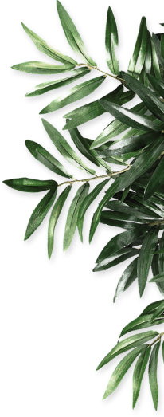
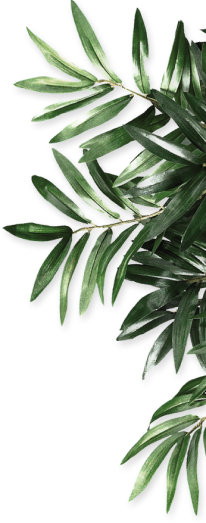

Kidneys are vital organs responsible for eliminating waste and toxins from the body while maintaining a
proper fluid and electrolyte balance. They also regulate blood pressure and help produce red
blood cells.
However, when kidneys become damaged or diseased, they lose their ability to function effectively.
Kidney disease may develop due to underlying health issues such as high blood pressure, diabetes,
infections, or even an unhealthy lifestyle. If left untreated, it can lead to chronic kidney disease (CKD)
or kidney failure, which affects the body's internal systems and overall health.
Ayurveda, the ancient system of natural healing, offers a safe and holistic way to manage kidney
disease.
Ayurvedic treatment works to rejuvenate kidney function by using herbs, diet changes, and detox
therapies
that address the root cause of the disease instead of just managing the symptoms. These methods not only
restore kidney health but also improve the body’s overall balance and vitality.
ACUTE KIDNEY DISEASE
CHRONIC KIDNEY DISEASE(CKD)
NEPHROTIC SYNDROME
POLYCYSTIC KIDNEY DISEASE(PKD)
High Creatinine Levels
 PROTEINURIA
KIDNEY SHRINKAGE
IGA-NEPHROPATHY
PROTEINURIA
KIDNEY SHRINKAGE
IGA-NEPHROPATHY
 Kidney Detox
Avoiding Dialysis
Kidney Cysts
Kidney Swelling
Kidney Detox
Avoiding Dialysis
Kidney Cysts
Kidney Swelling
 Glomerulonephritis
Kidney Failure
Kidney Infection
Kidney Stones
High Blood Urea
Foamy Urine
Glomerulonephritis
Kidney Failure
Kidney Infection
Kidney Stones
High Blood Urea
Foamy Urine
Ayurvedic kidney treatment focuses on healing the kidneys naturally by restoring their function using a combination of herbs, a kidney-supportive diet, and detox therapies. This approach is non-invasive and free from the side effects often seen in conventional treatments.
Powerful Ayurvedic herbs such as Punarnava, Varun, Gokshura, Triphala, and Turmeric are known for their detoxifying and anti-inflammatory properties. These herbs help improve urine flow, reduce swelling, and protect the kidneys from further damage.
A proper renal diet is also emphasized, including fresh fruits, vegetables, fluids, and coconut water. Processed and animal-based foods are avoided, as they can worsen kidney conditions. A vegetarian or vegan diet is recommended to support recovery.
At Atharveda, patients receive personalized Ayurvedic kidney care, where treatments are tailored to their health conditions. This includes managing kidney failure without dialysis. The goal is to treat the underlying causes of kidney disease and help patients regain natural kidney function, leading to long-term recovery.
My name is Sachin and I live in Burari, Delhi. Few years back, my father had developed a high creatinine value and upon looking the internet for good clinics for curing this issue, came across Atharveda. From the first week itself, the creatinine levels started to show a consistent decline and now the levels are quite manageable.
My friend, Aashna, recently developed swelling in one of her kidneys. She constantly complained of pain, nausea etc. Hassled by the symptoms, she tried various options but to no avail. Then, upon her aunt’s advice, decided to pay a visit to Atharveda.
I was diagnosed with chronic kidney disease and was worried about dialysis. Atharveda’s treatment gave me hope. My health improved gradually and I feel much better now. Thank you for your support and care!
After months of swelling and weakness, I found relief at Atharveda. The herbal medicines and dietary advice worked wonders for me. I am grateful to Dr. Puneet Dhawan and his team for their dedication.
My creatinine levels were high and I was scared. The ayurvedic approach at Atharveda was gentle and effective. My reports are much better now and I feel energetic again. Highly recommended!
I had lost hope after being told I needed dialysis. Atharveda’s natural treatment helped me avoid it. The doctors are very supportive and the results are real. Thank you!
My mother’s kidney health improved a lot after following Atharveda’s treatment plan. The staff is very caring and the medicines are safe. We are very happy with the results.
I was suffering from proteinuria and nothing seemed to work. The ayurvedic medicines from Atharveda helped me recover. My protein levels are normal now. Thank you for your guidance!
Discover the essence of Ayurveda with Atharv Veda. Your journey to holistic health and well-being starts here.

support@atharvveda.us

+1 (302) 966 9159
Copyright © 2025. All Right Reserved. Atharv Veda
 
